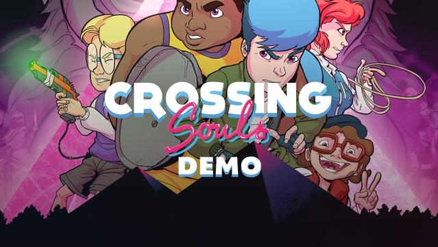

Crossing Souls Demo
Details
|  | |
| Playtime | Not Played |
| Last Activity | Never |
| Added | 07/08/2021 17:38:42 |
| Modified | Never |
| Completion Status | Not Played |
| Source | GOG |
| Platform | PC |
| Release Date | 05/02/2018 23:00:00 |
| Community Score | |
| Critic Score | |
| User Score | |
| Genre | Action Adventure Fantasy |
| Developer | Fourattic |
| Publisher | Devolver Digital |
| Feature | Controller support Single Player |
| Links | Store |
Description
 It’s 1986 in California. A group of friends discover a mysterious pink stone that allows to travel between two realms. This gang will live the summer of their lives in an adventure that will get them involved in a government conspiracy. Control five kids with special skills while fighting and solving puzzles in order to save their families and the world.
It’s 1986 in California. A group of friends discover a mysterious pink stone that allows to travel between two realms. This gang will live the summer of their lives in an adventure that will get them involved in a government conspiracy. Control five kids with special skills while fighting and solving puzzles in order to save their families and the world.
 Crossing Souls is an action-adventure set in a California suburb in the midst of a supernatural event that rocks the small community as grand forces siege the town. Control five characters: Chris, Matt, Charlie, Big Joe and Kevin, each one with their own skills and combat styles. Change characters on the fly and use each character's specialties to overcome any obstacle and target your foe's weaknesses. Fight in real-time, solve clever puzzles, face off against powerful bosses and play special levels inspired by 80's arcade video games.
Crossing Souls is an action-adventure set in a California suburb in the midst of a supernatural event that rocks the small community as grand forces siege the town. Control five characters: Chris, Matt, Charlie, Big Joe and Kevin, each one with their own skills and combat styles. Change characters on the fly and use each character's specialties to overcome any obstacle and target your foe's weaknesses. Fight in real-time, solve clever puzzles, face off against powerful bosses and play special levels inspired by 80's arcade video games.

- Feel the eighties - Do you feel that? Do you smell that? Yeah, it's the eighties. A story set in 1986 full of references such as The Goonies, Gremlins, Back to the Future and many more.
- Do you like Cartoons? - The cutscenes are inspired by 80's cartoons, totally original and never seen before in a videogame.
- Why is this happening? - Be part of a journey between two realms, two realities: life and death. The story includes a government conspiracy, thousand-year-old characters, cowboys, pirates, ice cream, pizza, cheeseburgers, basketball… well, you got it.
- This music rocks! - An original score that includes tracks inspired by John Williams and Jerry Goldsmith as well as radical Synth-Pop in the purest 80’s style. Play as if it was one of your favorite movies!
- Ready? Fight! - You can kick multiple enemies in the ass stylishly. Fight against street gangs, a secret army, dead monsters, creepy ghosts and many more in frantic real-time combats where a good strategy will be essential to win. Main characters have unique talents and aptitudes.